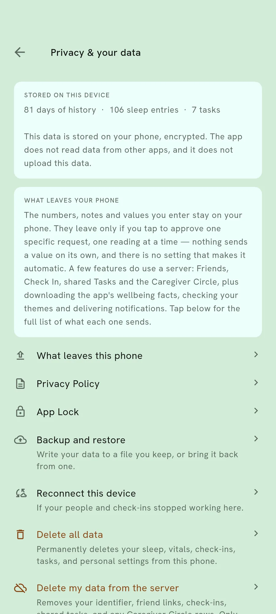

App Lock
For when the phone leaves your hand.
Phones get handed over — to a grandchild, at a counter, to someone fixing something. App Lock is for that, not for a stolen phone.
What App Lock does
It puts a lock on this app on top of whatever unlocks your phone. Someone holding an unlocked phone still cannot open your records.
It is separate from the backup password, and separate from your phone’s own lock. Losing one does not affect the others.
Set it under Privacy and your data
It sits with the other things that decide who can see what.

Why a second lock is worth it
Your phone’s lock protects it from strangers. It does nothing about the ordinary moment when you hand an unlocked phone to someone you know.
Health records are exactly the kind of thing that is fine with almost everyone and not fine with one particular person.
What it does not do
It is not encryption. Your records are already encrypted on the phone whether App Lock is on or not.
It is a door on the app, and it is honest about being that.